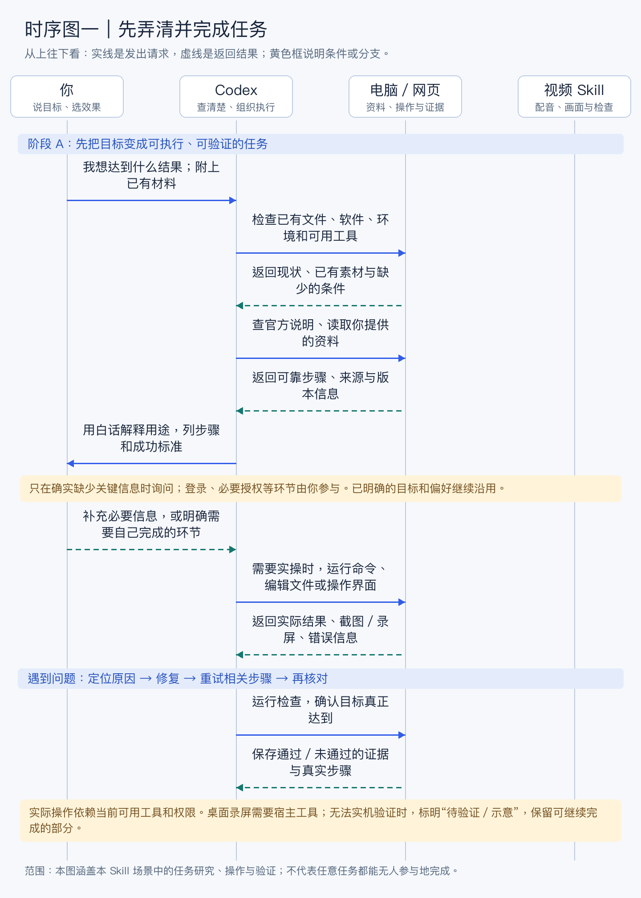
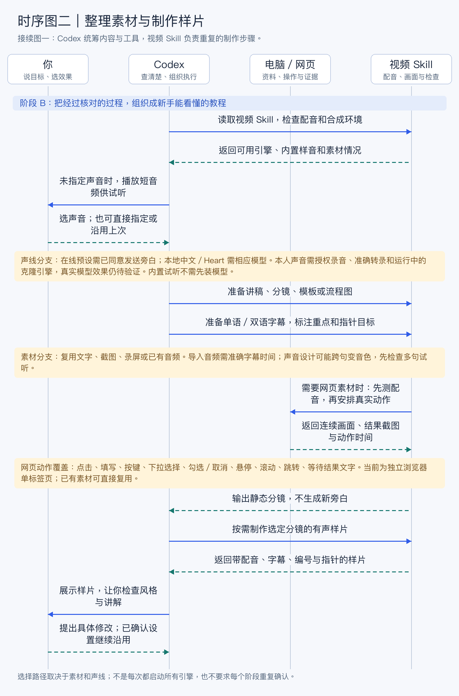
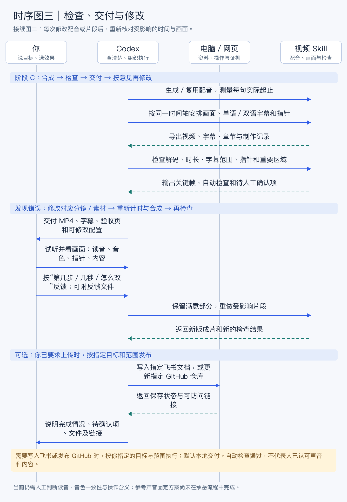

先说你想得到什么结果，不必先知道每一步怎么做。把已知情况、想要的教程效果和完成标准告诉 Codex，研究步骤、检查环境和整理讲稿可以交给助手。
我完全不会，但我想在 Mac 上让 Cursor 使用 Python 3.11。请你先查清楚怎么做，检查我的电脑现状，在可用工具和权限范围内帮我完成并验证。然后用 $narrated-tutorials，把实际过程做成初学者能跟着做的中文教程，关键位置用截图和鼠标指针指出。缺少必要信息时再问我。
把“在 Mac 上让 Cursor 使用 Python 3.11”替换成自己的任务即可。确实不知道的软件版本、操作步骤和专业名词，可以直接说“不知道，请你先检查”，不必为了提问先学完整套技术。
只填写你知道、且会影响结果的内容即可。没有截图也可以开始：先研究和操作采集；暂时无法取得真实画面时，先做标明来源与状态的讲解或示意。
请用 $narrated-tutorials 协助我完成下面的任务，并把经过核对的过程整理成新手教程。
【我想达到的结果】
在 Mac 上让 Cursor 使用 Miniconda 中的 Python 3.11 环境，并能运行一个简单 Python 程序。
【我的起点】
我完全不会；已安装了什么、是否需要更新，请你先检查。没有现成步骤和截图，请你先查官方资料并整理操作方法。
【请怎样推进】
先用一句白话解释每个软件是什么、为什么要用，再把任务拆成步骤。能从现有资料和电脑中查到的内容，请你自行核对；普通可逆操作继续推进。遇到必须由我登录、授权或补充的信息时，具体告诉我需要做什么。操作报错时先定位原因并验证修复结果，说明哪些已完成、哪些仍待验证。
【视频效果】
面向第一次接触的新手，中文讲解，带中英双语字幕，时长以把步骤讲清楚为准。尽量用真实截图或录屏，操作处加编号、高亮框、移动指针和点击提示；关系复杂时加简单图解。讲清“为什么做、点哪里、怎么确认成功”。
【声音与预览】
先给我听适合连续讲解的候选声音，再做一小段多句样片。重点检查前后是否像同一个人在说话；发现音色不稳先说明，不要直接批量生成。声音、风格选定后沿用。先看分镜和关键步骤样片，后续按已明确的意见继续制作，不必每一步重复询问。
【完成标准与交付】
实际核对 Cursor 使用的解释器路径和 Python 版本，并运行简单程序。交付 MP4、字幕文件、步骤与素材来源、可修改分镜配置和验收页；检查字幕与配音同步、按钮无遮挡、指针对准操作位置。未验证的内容和示意画面要明确标注。默认本地交付，上传或发布时按我指定的目标执行。
我只想学方法：
我想了解【任务目标】，目前完全没有基础。请用 $narrated-tutorials，先查官方资料，整理每个软件的用途、操作步骤和成功标准，做成新手教程。先制作讲稿与分镜；暂时不操作我的电脑。没有实机验证的部分请明确标注。
我已经有材料：
请用 $narrated-tutorials，把我提供的步骤、截图或录屏整理成教程。沿用已经选好的声音与风格，补充新手需要的解释、双语字幕和操作标记。已有可靠素材直接复用；缺少会影响讲解的画面时告诉我具体缺哪一步。
从上往下表示时间推进。四列分别是“你、Codex、电脑／网页、视频 Skill”；箭头表示谁把什么交给谁。三张图连续阅读，涵盖本教程场景中的研究、实际操作、素材、选声、字幕、样片、检查、修改与交付。不同任务只选择需要的分支。
能力范围：Codex 可以组织研究、运行命令、编辑文件、调用已接入工具和检查结果；可用范围取决于当前环境、账号和权限。视频 Skill 提供教程制作流程，不等于安装后就能操作所有软件。
你只提供目标，Codex 研究、检查、执行与验证；必要信息才由你补充。

覆盖已有素材、真实网页采集、试听选声、讲稿、翻译、图解、标记、字幕与样片。

覆盖时间同步、成片检查、人工试听、反馈、重新生成与按指定范围发布。

第二步 00:18–00:23，指针移动得太快，请在“选择解释器”处多停一秒；这一句改成更简单的说法。保留其余内容和声线，重新计算相关字幕与指针时间，再给我看修改后的样片。
不清楚时间也可以描述“第几步、哪个按钮、哪句话”。验收页可点击关键帧定位；下载的反馈文件需要再发给助手，网页不会自动替你发消息。
描述方法参考 OpenAI 官方提示说明；本 Skill 的具体能力以 GitHub 说明与实际验证记录为准。本节补充使用方法和能力边界，不代表新增了尚未实现的功能。